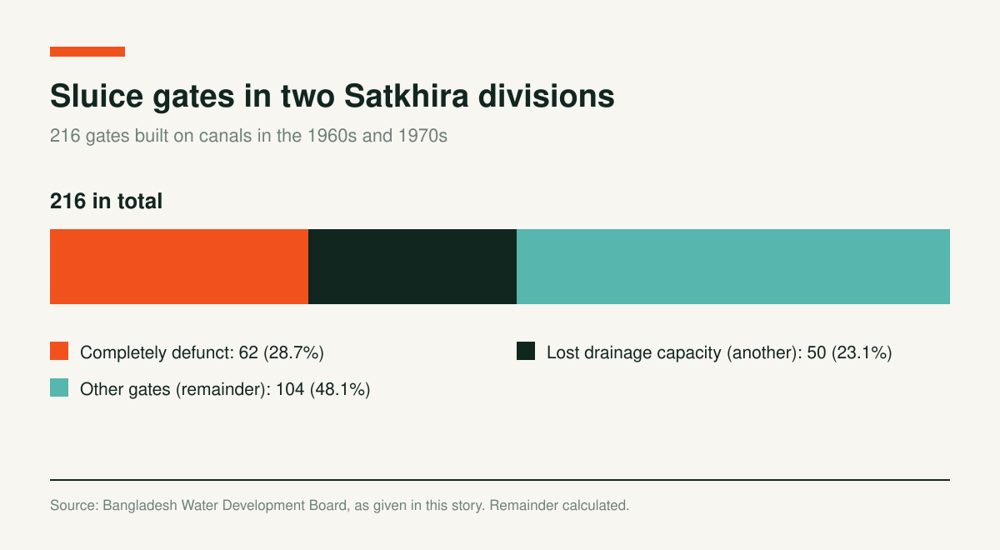

The Story of Fisherman Sunil Sarkar

Sunil Sarkar is close to 70. For three generations his family has made a living in the Sundarbans, catching fish and crabs. To keep the profession alive, Sunil, the lead fisherman, left his village in 1988 with ten families and travelled 105 kilometers to fish in the Malancha River, at the Sardar Bari ghat in East Kalinagar, on the edge of the Sundarbans in Shyamnagar Upazila. Most of the time their lives are spent on boats on the Malancha.
Sunil Sarkar is the son of the late Ishwar Shailendra Sarkar, whose father was the late Atal Barui of Muragacha village, Tala, Satkhira. In this area's river and forest culture, around 200 fishing families once lived in three villages on a branch of the Shalika river along the Kapotaksha. They survived by fishing in these rivers.
Sunil Sarkar belongs to an ancestral fishing community. Over time, social pressure around caste surnames led the younger generation to be known by the surname Sarkar.
Fishing families depend on wetlands, rivers, canals, and the fish and crabs of the Sundarbans. The flow of the Kapotaksha and Shalika rivers in Tala upazila is dying. Because of river regulation and encroachers, many families have changed professions. The Sunils, as Bagdi fishermen, travel 105 kilometers to gather fish in the Sundarbans to keep their profession alive.
The Kapotaksha carries the memory of the great poet Michael Madhusudan Dutt, and it carries the effects of climate change. These fishing families once supplied fish to the landlord class here. Sunil Sarkar's grandfather, the late Atal Barui, also supplied fish to landlords. Under the social order, anyone other than the Malo community who caught fish was called Bagdi and was cast out of society.
In the 1990s, the Shalika river had upstream flow for four months a year, and ebb tide for the rest. Saltwater flowing through the area entered the river. Local fishers could catch plenty of fish in the Kapotaksha and Shalika branches all year.
Later, freshwater flow fell and the river died. River regulation and encroachment began. Fishing families fell into hardship and a life of precarity. Many changed professions, but Sunil's family held on to their ancestral profession and culture.

Sunil Sarkar's uncle, Paritosh Sarkar (73), says big ships once ran on the Kapotaksha and Shalika. "We saw goods unloaded at the Batatala ghat. I was the oldest fisherman in this village. I had three net boats and caught many kinds of fish in the Kapotaksha and Shalika. Slowly, with the tide, muddy and sandy water began to come in. Within a few years the river lost its depth and silted up. We could no longer fish there with our net boats. To keep our fathers' and grandfathers' profession alive, we went out to sea. Now I am old, so I stopped fishing and do housework. Leaving their families at home, ten to twelve boats fish with Sunil in various rivers of Munshiganj."
At the Batatala ghat on the bank of the Kapotaksha, Abul Kashem (70) says that after the embankment was built in the 1960s, a sluice gate was built between the Shalika and the Kapotaksha. "Once the Kapotaksha was so wide you could not see people on the other bank clearly. The Malos' net boats covered the whole river. Muddy water came in with the tide and blocked the flow, and from about 1990 the river began to silt up. Gradually it died completely. Those who fished here with nets now go to the sea or to other rivers. Unable to change their profession, they leave their families and homes and live by fishing in the rivers."
Mohan Kumar, executive director of the environmental organization LEADERS, says silting of rivers causes major environmental problems. People move elsewhere to keep their livelihoods. Transport and communication suffer badly. Culture is being lost. Obstructed currents are killing the rivers.
Principal Ashek-e-Elahi, a river researcher and president of Satkhira's Save the Adi Jamuna River movement, says government data show Satkhira has about 25 rivers, and most are nearly silted up. Adi Jamuna, Kapotaksha, Shalika, Aibura, Kadamtala, Moricchap, Kak Siyali and many others are losing their depth. He names the main causes: embankments built without proper planning, which stop upstream water from flowing down; disputes over river boundaries that block dredging; seawater finding no way in; tidal water unable to rise and fall properly, so silt fills the riverbed; and the Water Development Board's unplanned construction of gates on embankments.
According to the Water Development Board (BWDB), 429 canals once flowed through the branches of Satkhira's 27 rivers. Because of encroachment, unplanned sluice gates and environmental disaster, most canals are now disappearing. In many places people have settled on chars that have emerged in rivers and canals. The 216 sluice gates built on these canals in the 1960s and 1970s have become defunct, silent witnesses of time.
Source: Water Development Board and interviews, as given in this story
Under two divisions of the Satkhira Water Development Board there are 216 sluice gates. Of the 123 under BWDB-1, 34 are completely defunct. Of the 93 under BWDB-2, 28 are completely defunct. Another 50 have lost their drainage capacity as silt has raised their beds.


BWDB-1 data show that of its 123 sluice gates, 35 were built between 1961 and 1965, 5 between 1968 and 1971, 30 between 1963 and 1967, 48 between 1963 and 1976, and 5 between 1989 and 1993. Most of them are now defunct.
Under Divisions 1, 3, 5 and 15 of BWDB-1, four rivers have disappeared: the Habra in parts of Satkhira Sadar, Assasuni, Debhata, Kaliganj and Shyamnagar, the Moricchap in Sadar and Assasuni, and the Kapotaksha and Saltha in Tala. Powerful people have occupied drainage canals to make fish enclosures, so every path for drainage has been closed.
Fisherman Sunil Sarkar came to the Sundarbans coast with his net boat in search of a livelihood. In 1988 he first went to the Kholpetua river via Chuna and Malancha. Now ten boats gather fish at the Munshiganj East Kalinagar Sardar Bari ghat.
They hold on to their own culture and the rules of the Sundarbans, including the worship of Banabibi and folk songs. Fishing families on the coast, who depend on nature, are on the verge of losing everything to climate change.
Sunil Sarkar now lives in great hardship with one son and one daughter. He educates his children by catching fish and crabs in the Sundarbans.
Charts and interactives by Coastal Voices. All figures come from the reporting above.